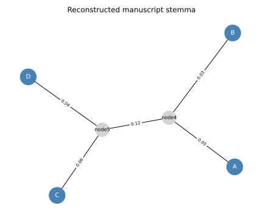

10 Manuscript Stemma Reconstruction
10.1 The Problem
- A historical text often survives in multiple manuscript copies, each introduced by scribes who occasionally made errors, omitted passages, or substituted words.
- A stemma is the family tree of those copies: it shows which manuscripts descend from which others and reconstructs lost intermediate ancestors.
- Stemma reconstruction is the computational problem of recovering that tree from the patterns of shared variants across surviving manuscripts.
- The approach here:
- Model each manuscript as a sequence of binary variant loci.
- Measure pairwise dissimilarity using Hamming distance.
- Apply the UPGMA algorithm to recover the tree topology and branch lengths.
- Visualize the reconstructed stemma.
Two manuscripts share 12 unique errors that appear in no other copy. A third manuscript shares none of those errors. What does this pattern most strongly suggest?
- The two manuscripts are later than the third.
- Wrong: later position in time does not follow from shared errors; a manuscript copied early can still share errors with a sibling copied later.
The two manuscripts descend from a common intermediate ancestor that already contained those errors before they were each copied. : Correct: shared unique errors (not present in the archetype or other branches) are the primary evidence for a common intermediate ancestor in stemmatic analysis.
- The scribe of one manuscript copied the other directly.
- Partly correct as one possibility, but an intermediate ancestor explains the same pattern without requiring direct copying; more evidence is needed to distinguish the two cases.
- The errors are scribal conventions and do not indicate copying relationships.
- Wrong: shared unique errors in the same positions are statistically very unlikely to have arisen independently and are the standard evidence for a copying relationship.
10.2 Variant Loci and Hamming Distance
- A variant locus is a specific position in a manuscript where at least one copy reads differently from the others.
- We represent each manuscript as a binary sequence: 0 if the reading at a locus matches the archetype, 1 if it has been corrupted.
- The Hamming distance between two manuscripts is the fraction of loci where they disagree:
\[D(A, B) = \frac{\text{number of loci where } A \neq B}{\text{total loci}}\]
- Manuscripts that share a common intermediate ancestor will have a smaller Hamming distance to each other than to manuscripts from a different family, because they share inherited variants in addition to their unique ones.
10.3 Distance Matrix for the Reference Stemma
- The reference stemma is:
\[((A:0.05,\ B:0.03):0.07,\ (C:0.06,\ D:0.04):0.05)\]
- Manuscripts A and B share intermediate ancestor alpha, which is separated from the archetype by 0.07. C and D share beta, separated from the archetype by 0.05.
- Pairwise distances are sums of branch lengths along the path between each pair.
| Pair | Distance |
|---|---|
| A, B | 0.05 + 0.03 = 0.08 |
| A, C | 0.05 + 0.07 + 0.05 + 0.06 = 0.23 |
| A, D | 0.05 + 0.07 + 0.05 + 0.04 = 0.21 |
| B, C | 0.03 + 0.07 + 0.05 + 0.06 = 0.21 |
| B, D | 0.03 + 0.07 + 0.05 + 0.04 = 0.19 |
| C, D | 0.06 + 0.04 = 0.10 |
10.4 The UPGMA Algorithm
- UPGMA (Unweighted Pair-Group Method with Arithmetic means) builds a rooted tree by iteratively merging the pair of nodes with the smallest pairwise distance.
- At each step:
- Find the pair \((i, j)\) with the smallest \(D(i,j)\).
- Create an internal node \(u\). Each branch from \(u\) has length \(D(i,j)/2\):
\[\ell_i = \ell_j = \frac{D(i,j)}{2}\]
- Replace \(i\) and \(j\) with \(u\). Distance from \(u\) to any remaining taxon \(k\) is the average:
\[D(u,k) = \frac{D(i,k) + D(j,k)}{2}\]
- Repeat until two nodes remain, then join them with an edge equal to the remaining distance.
- UPGMA assumes a constant rate of scribal error across all manuscripts (analogous to the molecular clock in phylogenetics). The neighbor-joining algorithm relaxes this assumption but requires more advanced mathematics.
10.5 A Worked Example
Starting with \(n = 4\) manuscripts and the distances from the reference stemma:
| A | B | C | D | |
|---|---|---|---|---|
| A | — | 0.08 | 0.23 | 0.21 |
| B | — | 0.21 | 0.19 | |
| C | — | 0.10 | ||
| D | — |
Step 1: the minimum distance is \(D(A,B) = 0.08\). Merge A and B into node4. Branch lengths: \(\ell_A = \ell_B = 0.08/2 = 0.04\). Update the matrix using the UPGMA averaging rule:
\[D(\text{node4}, C) = \frac{0.23 + 0.21}{2} = 0.22\] \[D(\text{node4}, D) = \frac{0.21 + 0.19}{2} = 0.20\]
The \(3 \times 3\) matrix after step 1:
| node4 | C | D | |
|---|---|---|---|
| node4 | — | 0.22 | 0.20 |
| C | — | 0.10 | |
| D | — |
Step 2: the minimum distance is \(D(C,D) = 0.10\). Merge C and D into node5. Branch lengths: \(\ell_C = \ell_D = 0.10/2 = 0.05\). Update:
\[D(\text{node4}, \text{node5}) = \frac{0.22 + 0.20}{2} = 0.21\]
Step 3: two nodes remain (node4 and node5). Join them with the remaining edge of length \(0.21\).
The recovered edges are:
| Edge | Length |
|---|---|
| node4 – A | 0.04 |
| node4 – B | 0.04 |
| node5 – C | 0.05 |
| node5 – D | 0.05 |
| node4 – node5 | 0.21 |
In step 2 of the worked example, which pair is merged?
- node4 and C, because D(node4, C) = 0.22 is the second-smallest entry.
- Wrong: D(C, D) = 0.10 is smaller than D(node4, C) = 0.22 and D(node4, D) = 0.20, so C and D are merged first.
- C and D, because D(C, D) = 0.10 is the smallest remaining distance.
- Correct: UPGMA always merges the pair with the global minimum distance in the current matrix.
- node4 and D, because D(node4, D) = 0.20 is smaller than D(node4, C) = 0.22.
- Wrong: D(C, D) = 0.10 is the global minimum and is smaller than both cross-family distances, so C and D are merged.
10.6 Hamming Distance Function
10.7 Visualizing the Stemma

10.8 Generating Synthetic Manuscripts
- The stochastic generator simulates a known copying tree by propagating random mutations from the archetype through each branch.
- Each locus flips independently with probability
MUTATION_PROB = 0.05. - Only the four surviving manuscripts A, B, C, D are returned; the archetype and intermediate ancestors are not observed.
10.9 Testing
- Hamming distance edge cases
- Identical sequences have distance 0.0.
- Sequences that differ at every locus have distance 1.0.
- Sequences that differ at exactly half the loci have distance 0.5.
- Distance matrix structure
- The matrix must be symmetric with a zero diagonal.
- Within-family distances (A–B and C–D) must be smaller than any cross-family distance, reflecting the true two-clade topology.
- Topology recovery
- A and B must share a private internal ancestor (node4), and C and D must share a different one (node5), with no manuscript connected to both internal nodes.
- UPGMA merges A and B first (D=0.08, the global minimum), then C and D (D=0.10, the next minimum), then joins the two internal nodes.
- Branch-length recovery
- With the reference distances, UPGMA assigns branch length 0.04 to each of the A and B edges (half of 0.08), 0.05 to each of the C and D edges (half of 0.10), and 0.21 to the internal edge.
- Tolerance \(10^{-10}\) covers only accumulated floating-point rounding.
- All lengths positive
- Every branch length returned by UPGMA must be strictly positive, confirming that no degenerate zero-length branches were produced.
- Stochastic generator topology
- Manuscripts generated by the copying simulator must also satisfy the within-family vs. cross-family distance inequality, confirming that the mutation rate is low enough for the tree signal to dominate noise.
import pytest
import numpy as np
from generate_stemma import make_manuscripts, MANUSCRIPTS
from stemma import (
hamming_distance,
make_distance_matrix,
upgma,
)
# ---------------------------------------------------------------------------
# hamming_distance
# ---------------------------------------------------------------------------
def test_hamming_identical():
# Two identical sequences have distance 0.0.
seq = np.array([0, 1, 0, 1, 1], dtype=np.int8)
assert hamming_distance(seq, seq.copy()) == pytest.approx(0.0)
def test_hamming_all_different():
# Sequences that differ at every locus have distance 1.0.
seq_a = np.zeros(10, dtype=np.int8)
seq_b = np.ones(10, dtype=np.int8)
assert hamming_distance(seq_a, seq_b) == pytest.approx(1.0)
def test_hamming_half():
# Sequences differing at exactly half the loci have distance 0.5.
seq_a = np.zeros(8, dtype=np.int8)
seq_b = np.array([1, 1, 1, 1, 0, 0, 0, 0], dtype=np.int8)
assert hamming_distance(seq_a, seq_b) == pytest.approx(0.5)
# ---------------------------------------------------------------------------
# Distance matrix
# ---------------------------------------------------------------------------
def test_distance_matrix_symmetry():
# The distance matrix must be symmetric with zero diagonal.
names, D = make_distance_matrix()
n = len(names)
assert D.shape == (n, n)
np.testing.assert_allclose(D, D.T, atol=1e-12)
np.testing.assert_allclose(np.diag(D), 0.0, atol=1e-12)
def test_distance_matrix_within_family_smaller():
# Within-family distances (A–B and C–D) must be smaller than cross-family
# distances (A–C, A–D, B–C, B–D), reflecting the true copying tree.
names, D = make_distance_matrix()
idx = {n: i for i, n in enumerate(names)}
d_ab = D[idx["A"], idx["B"]]
d_cd = D[idx["C"], idx["D"]]
cross = [D[idx[a], idx[b]] for a in "AB" for b in "CD"]
assert d_ab < min(cross)
assert d_cd < min(cross)
# ---------------------------------------------------------------------------
# UPGMA topology and branch lengths
# ---------------------------------------------------------------------------
def test_upgma_topology_recovery():
# A and B must share a private internal ancestor, and C and D must share
# a different one. UPGMA merges the pair with the smallest distance first:
# D(A,B) = 0.08 is the global minimum, so A and B are joined first into
# node4; then D(C,D) = 0.10 < D(node4,C) = D(node4,D), so C and D are
# joined into node5; finally node4 and node5 are joined.
names, D = make_distance_matrix()
edges = upgma(names, D)
# Build an adjacency map.
adj = {}
for a, b, _ in edges:
adj.setdefault(a, []).append(b)
adj.setdefault(b, []).append(a)
# Find the internal node connected to each manuscript.
parent_a = [n for n in adj["A"] if n not in MANUSCRIPTS][0]
parent_b = [n for n in adj["B"] if n not in MANUSCRIPTS][0]
parent_c = [n for n in adj["C"] if n not in MANUSCRIPTS][0]
parent_d = [n for n in adj["D"] if n not in MANUSCRIPTS][0]
assert parent_a == parent_b, "A and B should share an internal ancestor"
assert parent_c == parent_d, "C and D should share an internal ancestor"
assert parent_a != parent_c, (
"AB family and CD family should have different ancestors"
)
def test_upgma_branch_lengths():
# UPGMA branch lengths for the reference distance matrix.
#
# Step 1: merge A and B (D=0.08). Each branch length = 0.08/2 = 0.04.
# D(node4, C) = (0.23 + 0.21) / 2 = 0.22
# D(node4, D) = (0.21 + 0.19) / 2 = 0.20
#
# Step 2: merge C and D (D=0.10 < 0.20 < 0.22). Each branch length = 0.05.
# D(node4, node5) = (0.22 + 0.20) / 2 = 0.21
#
# Step 3: join node4 and node5 with the remaining distance = 0.21.
#
# Tolerance 1e-10 covers only accumulated floating-point rounding.
names, D = make_distance_matrix()
edges = upgma(names, D)
expected = {
frozenset(["node4", "A"]): 0.04,
frozenset(["node4", "B"]): 0.04,
frozenset(["node5", "C"]): 0.05,
frozenset(["node5", "D"]): 0.05,
frozenset(["node4", "node5"]): 0.21,
}
recovered = {frozenset([a, b]): length for a, b, length in edges}
for key, true_len in expected.items():
assert key in recovered, f"Missing edge {key}"
assert recovered[key] == pytest.approx(true_len, abs=1e-10)
def test_upgma_all_lengths_positive():
# Every branch length in the UPGMA tree must be strictly positive.
names, D = make_distance_matrix()
edges = upgma(names, D)
for a, b, length in edges:
assert length > 0, f"Non-positive branch length on edge {a}--{b}: {length}"
# ---------------------------------------------------------------------------
# Stochastic generator topology
# ---------------------------------------------------------------------------
def test_generator_topology():
# Manuscripts generated stochastically must also produce a distance matrix
# whose minimum within-family distance is smaller than the minimum
# cross-family distance, so UPGMA can still find the correct grouping.
mss = make_manuscripts()
within = [
hamming_distance(mss["A"], mss["B"]),
hamming_distance(mss["C"], mss["D"]),
]
cross = [hamming_distance(mss[a], mss[b]) for a in "AB" for b in "CD"]
assert max(within) < min(cross), (
"Within-family distances should be smaller than cross-family distances"
)Manuscript stemma key terms
- Stemma
- The family tree of manuscript copies of a text, showing which copies derive from which others; internal nodes represent lost intermediate ancestors and leaves represent surviving manuscripts
- Stemma reconstruction
- The computational task of recovering the stemma from patterns of shared variants (errors or readings) across surviving manuscripts; analogous to phylogenetic tree reconstruction in biology
- Archetype
- The hypothetical original manuscript from which all surviving copies ultimately derive; it may itself be lost, in which case it is inferred as the root of the stemma
- Variant locus
- A position in a text where at least two manuscripts have different readings; used as the character data for computing pairwise distances
- Hamming distance
- The fraction of corresponding positions at which two sequences differ; for binary variant sequences, it equals the proportion of loci where one manuscript has the archetype reading and the other has a variant
- UPGMA
- Unweighted Pair-Group Method with Arithmetic means; a clustering algorithm that builds a rooted, ultrametric tree by iteratively merging the pair of nodes with the smallest pairwise distance and updating distances by averaging; assumes a constant rate of change along all branches
10.10 Exercises
10.10.1 Do the math
Two manuscripts each have 100 variant loci. Manuscript A differs from the archetype at loci 1–10 and 21–30. Manuscript B differs from the archetype at loci 1–10 and 41–55. What is the Hamming distance between A and B?
After merging A and B into node4 in the first UPGMA step, \(D(A, C) = 0.23\) and \(D(B, C) = 0.21\). Using the UPGMA averaging rule \(D(\text{node4}, C) = (D(A,C) + D(B,C)) / 2\), what is \(D(\text{node4}, C)\)?
10.10.2 Hamming distance from manuscript sequences
The generate_stemma module produces actual sequences, not just distances. Write build_distance_matrix(mss) that accepts the dict returned by make_manuscripts and computes the full \(4 \times 4\) Hamming distance matrix. Run UPGMA on this matrix and compare the recovered topology to the one from make_distance_matrix. Do the stochastic distances give the same grouping?
10.10.3 Effect of mutation rate
Re-run make_manuscripts with mutation_prob values of 0.01, 0.05, 0.10, and 0.20. For each rate, compute the distance matrix and check whether UPGMA recovers the correct two-family topology. At what mutation rate does the signal begin to fail, and why?
10.10.4 Effect of noise on UPGMA
UPGMA assumes all branch rates are equal (the constant-rate assumption). Add Gaussian noise to the reference distance matrix using make_distance_matrix(noise_scale=s) for \(s \in \{0.01, 0.02, 0.05\}\). At what noise level does UPGMA first recover the wrong topology (A or B grouped with C or D)? How does this compare to the noiseless case?
10.10.5 Adding a contaminated manuscript
A contaminated manuscript (one that was copied partly from two different sources) does not fit a tree model. Add a fifth manuscript E whose sequence is a 50/50 mix of A and C. Compute the distance matrix for all five manuscripts and run UPGMA. Does the algorithm detect the problem, and if so, how is it visible in the recovered tree?